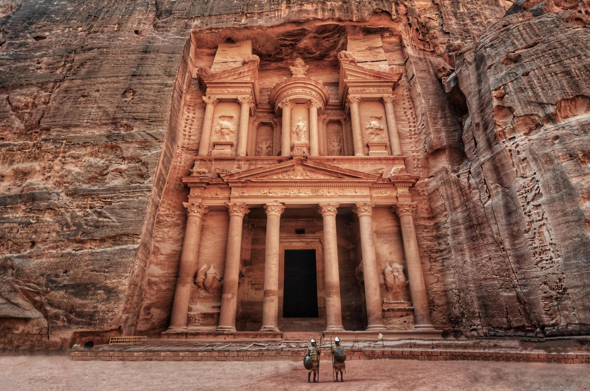

Although the entries have varied over the centuries, the seven traditional wonders are believed to be the Great Pyramid of Giza, the Colossus of Rhodes, the Lighthouse of Alexandria, the Mausoleum at Halicarnassus, the Temple of Artemis, the Statue of Zeus at Olympia, and the Hanging Gardens of Babylon.
However, recently a Swiss company proposed an idea for seven World wonders for the modern World. Popular by demand, the new wonders were chosen in 2007 through an online contest in which more than tens of millions of people voted. The Great Wall of China. The Taj Mahal. Petra. The Colosseum. Christ the Redeemer.
Chichén Itzá. Machu Picchu. These sites are now known as the "new Seven Wonders of the World." These popular tourist sites are all architectural marvels of gigantic scale built by ancient and medieval empires.
The Great Wall of China
The Great Wall of China is an ancient series of walls and fortifications, built during the Qin Dynasty as a means of protection against the Huns. Dubbed the Great Wall of China because of its marvel length; it spans more than 13,000 miles! The Great Wall served to prevent invasions although it never particularly worked well. The Great Wall as it is known today was mainly constructed during the Ming Dynasty circa 1368-1644. The wall itself was not always "great." Initially, states constructed walls to protect their states, which later became part of the Chu State Wall. Under the rule of Emperor Qin Shi Huang, soldiers and convicts were ordered to construct this wall. It is said that more than 400,000 people died building this wall; most of whom were buried in the wall.
The Taj Mahal
The Taj Mahal also spelled as Tadj Mahall is located in the Agra District in Northern India. The Taj Mahal was built by the Mughal emperor Shah Jahān (reigned 1628-58) to immortalize his wife Mumtaz Mahal. The Indian mausoleum complex is a prominent example of Mughal architecture with its captivating symmetry, which is a blend of Indian, Persian, and Islamic architectural styles. The majestic palace is constructed of white marble that reflects hues according to the intensity of light reflected from the sun or the moon.
Petra

Petra is an ancient city that lies in present-day Jordan and dates back to the fourth century B.C. Not only is Petra an archeological fascination because of its rock-cut architecture, but also because of its early implementation of a plumbing system. Petra has also been referred to as the "Rose city" because of the unique color of the stones used in the buildings. The city of Petra was established as a trading post and the Nabateans -an Arab Bedouin tribe- accumulated a significant amount of wealth. Envious of their riches, the Greek empire attacked the city in 312 B.C.
The Colosseum
The Colosseum is a massive stone structure commissioned by Emperor Vespasian of the Flavian dynasty as a gift to the Roman people. The Colosseum is a collosal ampitheatre intended for entertainment purposes. Also known as the Flavian Amphitheater, the Colosseum was home to events such as gladitorial fights and wild animal fights. After 4 centuries of active use, the arena was neglected and up until the 18th century, the Colosseum was used as a source of building materials. Hence, the Colosseum is not in its original glory. However, the amphitheater remains a popular tourist site, as well as being an iconic symbol of the Roman empire.
Christ the Redeemer Statue
Christ the Redeemer is a colossal statue of Jesus Christ at the summit of Mount Corcovado located in Southern Brazil. The statue was completed in 1931, making it the most modern monument of the seven new World wonders. The statue is formed from soapstone and reinforced in concrete and stands nearly 100 feet with a wingspan of 92 feet. Initially, the project for the construction of this statue was suggested by a priest to be made to honour Isabel, the princess regent of Brazil and daughter of Emperor Pedro II. The project was never approved but citizens petitioned President Epitácio Pessoa to allow for the construction of the statue on Mount Corcovado.
Chichen Itza
Chichen Itza was a Mayan city located on the Yucatan Peninsula in Mexico. As one of the seven World wonders, Chichen Itza is an important tourist attraction site. However, this site also remains an active archeological site. There are novel discoveries that provide more insight of the Mayan people, who ruled much of present day Mexico and Central America. The name Chichen Itza means "at the mouth of the well of Itza." The Itzans were an ethnic group of Mayans who rose to power in the northern part of the Yucatan Peninsula. The "well" in the name of Chichen Itza is referring to the numerous underground rivers beneath the region that served as a water source for the city.
Machu Picchu
Machu Picchu is located in Peru on mountainous terrain. Tourists are welcomed with more than 3,000 stone steps carved into the terrace that link its many different levels. The historic site is believed to have been a royal estate for leaders and nobles or a sacred religious site for Inca leaders. The Incan civilization was virtually wiped out by Spanish invaders in the 16th century. Machu Picchu is a prime example of the Incan architectural and engineering prowess. Its central buildings display mastery of a masonry technique and its irrigation systems along with terrace farming allowed for agriculture.